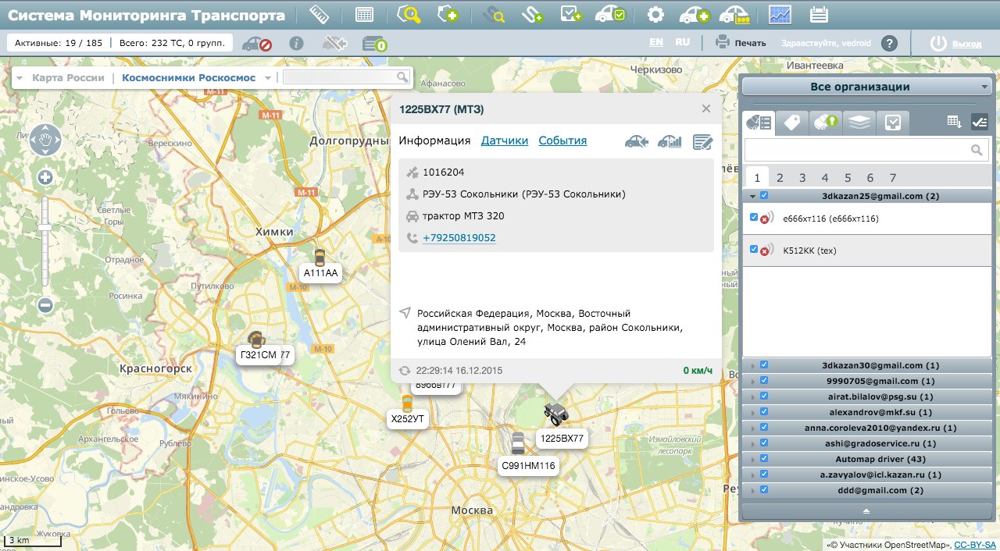
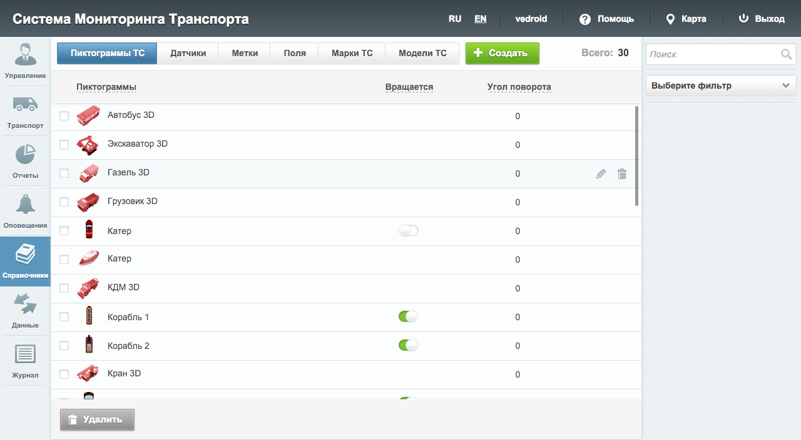

Сидоров Роман
Если вам не весело, вы занимаетесь не тем делом.
тел: +7 960 047-76-42
e-mail: sidorovroman92@gmail.com
Образование
Казанский государственный университет им. В.И. Ульянова-Ленина
Прикладная математика и информатика
2010 - 2015
Казанский государственный университет им. В.И. Ульянова-Ленина
Математические методы в экономике
2010 - 2014
Языки
- Русский
- Английский ( Разговорный )
- Французский ( Базовый )
Опыт работы и основные проекты
Android Developer
"ГрадоСервис" январь 2014 – настоящее время
Разработка android - приложения “Automap”, реализующего клиентскую часть одноименной системы автомониторинга и геоинформационной системы “Automap”. Приложение созданно для руководителей, позволяющее отслеживать местоположение и маршруты своих транспортных средств, узнавать о показателях датчиков, строить отчеты и проверять статусы и активность водителей.
 Разработка android - приложения “Automap Задачи”. Создано для руководителей, пользующихся продуктом “Automap”. Приложение позволяет управлять задачами транспортных средств, контролировать их выполнение.
Разработка android - приложения “Automap Задачи”. Создано для руководителей, пользующихся продуктом “Automap”. Приложение позволяет управлять задачами транспортных средств, контролировать их выполнение.
Разработка android - приложения “Automap Водитель”. Создано для водителей транспортных организаций, пользующихся продуктом “Automap”. Приложение выполняет роль полноценного навигатора, включающего список задач с детальным описанием. С помощью PUSH-уведомлений водитель всегда остается в курсе актуальных задач. Также приложение имеет специально разработанный сервис по отправке данных местоположения и текущих показателей android-устройства.
Разработка сервиса отправки данных для android-устройств по средствам protobuf протокола.
Разработка модулей авторизации через социальные сети для системы https://geo4.me/.
Наличие коммитов в геоинформационную библиотеку Osmbonuspack
Cпециализированные навыки:
JAVA, Android SDK, NDK, WebSocket (Autobahn.ws , Weberknecht), protobuf, Maps.me engine, Gradle , Maven, Osmdroid, Osmbonuspack, AndroidAnnotatios, Retrofit, Okhttp, Picasso, Achartengine, Gson
Логирование ошибок с системами Airbrake и Fabric.io (Crashlytics)
Среда разработки : Android Studio, Eclipse
Система контроля версий : GIT (Source Tree)
Web Application Developer
"ГрадоСервис" август 2012 – январь 2014 Разработка системы автомониторинга и геоинформационной системы Automap
 Разработка системы администрирования Automap
Cпециализированные навыки:
JavaScript, jQuery, Backbone.js, underscore.js, Bootstrap, Angular,WebSocket, LESS, CSS, HTML, require.js
Среда разработки : IntelliJ IDEA
Система контроля версий : GIT (bash)
Дополнительный опыт:
Разработка клиентской части веб-приложения социальной сети ноябрь 2013 – январь 2014
Разработка сайта SkyPark март 2016 – апрель 2016
Сертификаты
Сертификат об окончании онлайн-школы android-разработчиков Google & e-Legion http://learndroid.e-legion.ru/certificates/9ab8309ac1485077872fd51d6b2da056.pdf